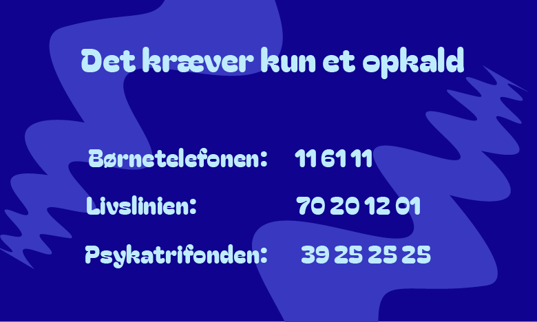
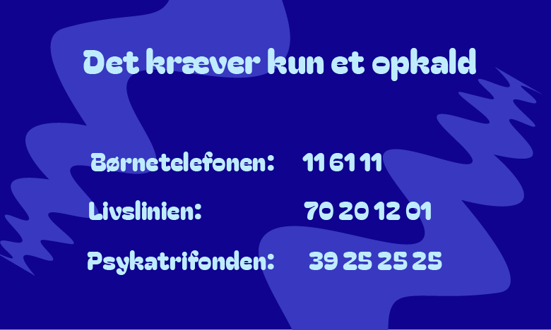
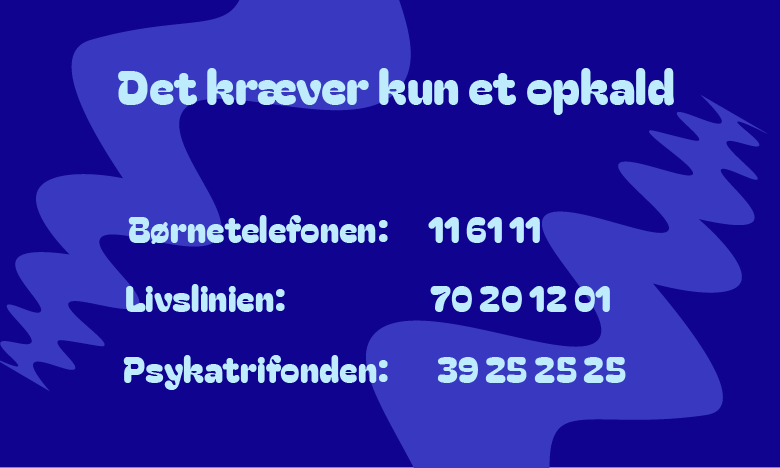
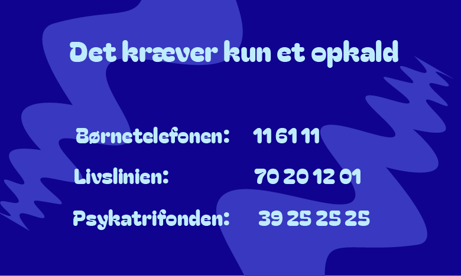
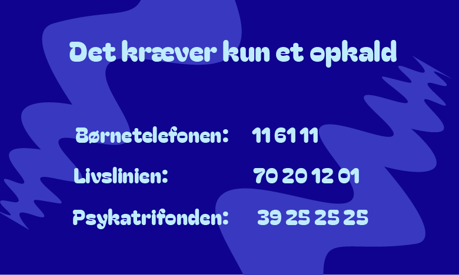

Har du det svært?
Du er ikke alene med dine tanker
Det kræver kun et opkald !
Børnetelefonen:
116111
Livslinien:
70 20 12 01
Psykiatrifonden:
39 25 25 25
Se vores visitkort

Luk
Klik her for at læse om hjælpen
Hvem af dem skal jeg ringe til?
Børnetelefonen:
Hvis du går rundt med noget på hjerte, stort som småt, kan du altid ringe.
Intet problem er for lille eller for stort.
Livslinien:
Har du en svær periode i dit liv?
Krisen kan føre til selvmordstanker eller selvskade – tal med nogen, der kan hjælpe.
Psykiatrifonden:
Her kan du altid få rådgivning,
om det er stort eller småt.
Vi sidder klar til at lytte til dig, når du har brug for det.
Luk
 


